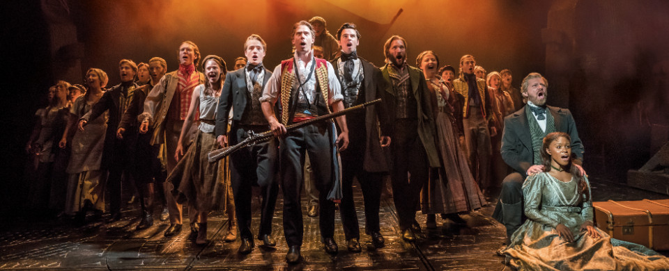
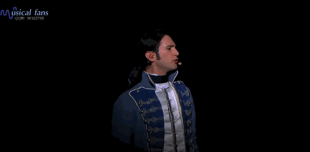
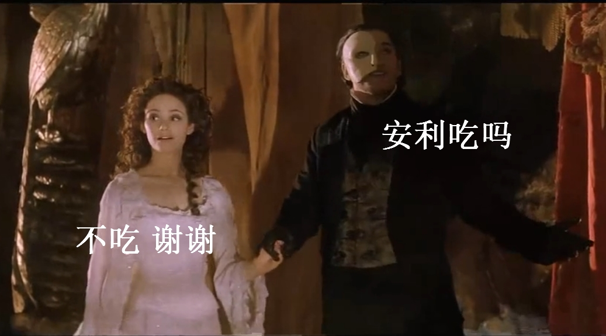

5 MUST-KNOW MUSICALS

About Musicals
Musical theatre is a form of theatrical performance that combines songs, spoken dialogue, acting and dance. The story and emotional content of a musical are communicated through the words, music, movement and technical aspects of the entertainment as an integrated whole. Since the early 20th century, musical theatre stage works have generally been called, simply, musicals.[1]
Basically, we have musicals in English from West End in London and Broadway in New York, musicals in German from Austria and Germany, musicals in French from French, musicals in Japanese from Takarazuka Revue. Also, now we have some nice Chinese musicals, such as Butterflies.
Differeces between Musical and Opera
Musical: Microphones
Opera: Vibrato
Musical: Chorus and dancing
Opera: Ballet
Musical: May use recording
Opera: Symphony Orchestra
Musical: Singing and Speaking
Opera: Singing
For more details, please visit:
Difference Between Opera And Musical
The Phantom of the Opera
Music: Andrew Lloyd Webber
Lyrics: Charles Hart, Richard Stilgoe
Basis: The Phantom of the Opera by Gaston Leroux
Premiere: 1986, West End[2]
Synopsis:
The Phantom had been teaching Christine for years and he helped her to be the leading singer.
At the performance, Christine met Raoul and fell in love with him. Then the Phantom kidnapped Christine and kissed her.
At last, he left. The only thing he left behind was the mystery of the Phantom of the Opera and his white mask.
Official Website: https://www.thephantomoftheopera.com/
Productions recommended:

25th Anniveersary Concert

Movie in 2004
Les Misérables
Music: Claude-Michel Schönberg
Lyrics: Lyrics: Alain Boublil, Jean-Marc Natel (French version); Herbert Kretzmer (English version)
Basis: Basis: Les Misérables by Victor Hugo
Premiere: 1980, Paris;1985, West End[3]
Synopsis:
Set against the backdrop of 19th-century France, Les Misérables tells an enthralling story of broken dreams and unrequited love, passion, sacrifice and redemption – a timeless testament to the survival of the human spirit.
Ex-convict Jean Valjean is hunted for decades by the ruthless policeman Javert after he breaks parole.
When Valjean agrees to care for factory worker Fantine’s young daughter, Cosette, their lives change forever.[4]
Official Website: https://www.lesmis.com/london/sights-sounds
Productions recommended:

10th Anniveersary Concert

25th Anniveersary Concert

Movie in 2014: Trailer
Jesus Christ Superstar
Music: Andrew Lloyd Webber
Lyrics: Tim Rice
Basis: Bible
Premiere: 1970, Concept album; 1971, Broadway
Synopsis:
The story is loosely based on the Gospels' accounts of the last week of Jesus's life, beginning with the preparation for the arrival of Jesus and his disciples in Jerusalem and ending with the crucifixion. It depicts political and interpersonal struggles between Judas Iscariot and Jesus that are not present in the Bible.[5]
Official Website: https://www.jesuschristsuperstar.com/
Productions recommended:

Movie in 2000

2012 in Aaustralia
Mozart!
Music: Sylvester Levay
Lyrics: Michael Kunze
Basis: The life of Wolfgang Amadeus Mozart
Premiere: 1999, Austria[6]
Synopsis:
The central figure is Mozart, the artistic genius who struggles to free himself from his loving but tyrannical father and to escape the paternalist rule of family and society so that he can finally develop as both a musician and a person – a drama about growing up.
Mozart himself appears as two different characters: as Wolfgang, the man, and as Amadé, the genius. The adorable “porcelain child” that Amadé supposedly once was, dogs the adult Mozart everywhere he goes. Little Amadé is omnipresent in the life of Mozart the man - even if only the audience and Mozart himself can see him.
Amadé, the child prodigy, composes non-stop, while the adult Wolfgang is out gambling, carousing, loving and living, daring to break out of the prison of social convention.[7]
Official Website: https://www.musicalvienna.at/en/schedule-and-tickets/schedule/production/7/MOZART
Production Recommended:

2015 in Vienna
1789: Les Amants de la Bastille
Music: Rod Janois, Jean-Pierre Pilot, Olivier Schultheis, William Rousseau and Dove Attia
Lyrics: Dove Attia and François Chouquet
Premiere: 2012, Paris
Synopsis:
In the spring of 1789, France is devastated by famine. The French people begin to rise in unrest against the ruling French king Louis XVI. Ronan, a young peasant, leads a revolt marching to Paris after his father's death (killed by Count Lazare de Peyrolles), where he encounters Olympe, an assistant governess of the children of Marie Antoinette of Austria.
The two fall in love during the tumultuous stirrings of the French Revolution, their romance playing out amid encounters with major Revolutionary figures such as Georges Jacques Danton, Maximilien de Robespierre and Camille Desmoulins. After they are separated, Ronan and Olympe find each other again on 14 July 1789 in the course of the assault on the Bastille prison— an encounter that seals their destiny even as a new era begins.[8]
Production Recommended:

2012 in Paris

Official Clips

References:
[1]https://en.wikipedia.org/wiki/Musical_theatre
[2]https://en.wikipedia.org/wiki/The_Phantom_of_the_Opera_(1986_musical)
[3]https://en.wikipedia.org/wiki/Les_Mis%C3%A9rables_(musical)
[4]https://www.lesmis.com/london/about
[5]https://en.wikipedia.org/wiki/Jesus_Christ_Superstar
[6] https://en.wikipedia.org/wiki/Mozart!
[7] https://www.musicalvienna.at/en/schedule-and-tickets/schedule/production/7/MOZART
[8] https://en.wikipedia.org/wiki/1789:_Les_Amants_de_la_Bastille